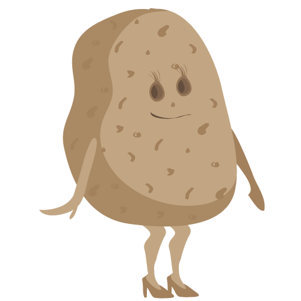
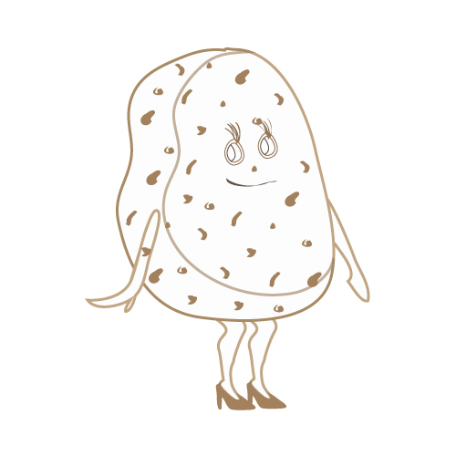

Miss Potato
- Season
- I have
Central American origins and the best period to cultivate me is during the spring time.
You can find me in the greengrocer and supermarket from Agoust to October. - Benefit
- Miss Potato along with its skin is one of a good source of antioxidant vitamin, vitamin-C. Regular consumption of foods rich in
vitamin-C helps the human body develop resistance against infectious agents. - Curiosity
- I'm not a vegetable, exactly I'm a humble tuber.
- Fun facts
- Miss Potato and her family is the fourth largest food crop in the world after rice, wheat, and corn.
Let's cook
Draw me
First of all draw this shape
Now you can add legs and arms
It's time to draw the face
Add this internal line and the shoes

Miss Potato is full of holes
Now it's ready to be colored.